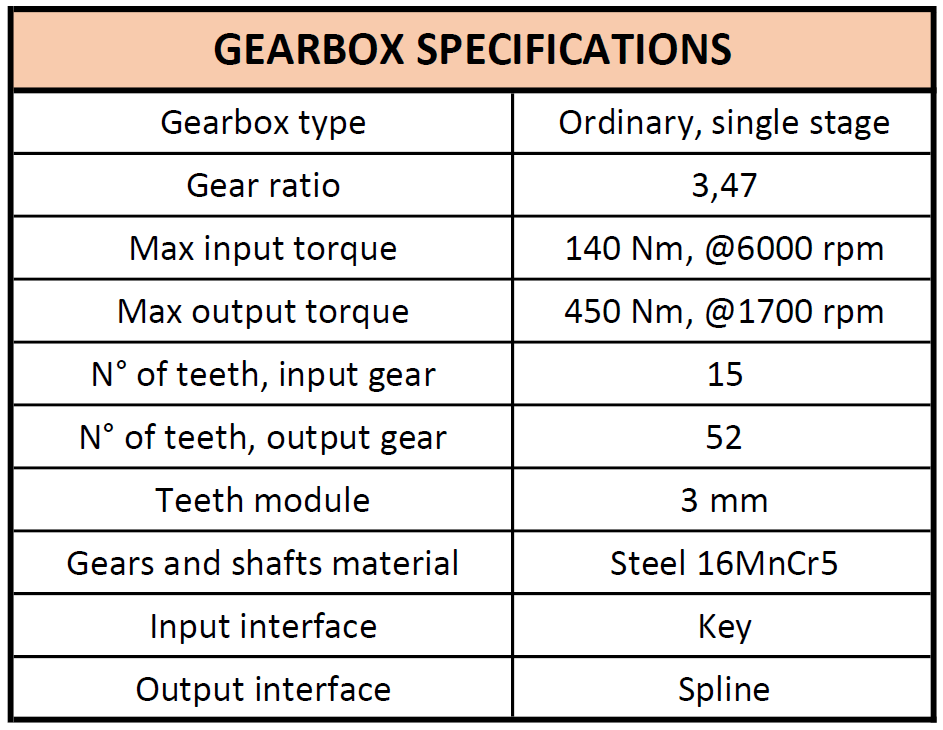

Powertrain of Chimera Evoluzione¶

ELECTRIC¶
1 Motors¶
Chimera Evoluzione, the new vehicle of E-agle Trento Racing Team, has a rear-wheel drive with two motors on board. “Emrax 208” high voltage motors combined with a liquid cooling are used.
1.1 Choice of Motors¶
Every team can use any number of motors. For this reason it is possible to use one motor with a mechanical differential, two motors typically mounted on-board with a rear-wheel drive configuration or four motors typically mounted in-wheel. First of all we have to choose which kind of motor is better to use. The possibilities are: PMSM (Permanent Magnet Synchronous Motor), DC motor and induction motor. The DC motors have to be very big for the power that we would to use, so are discarded. The induction motors have a slow dynamic and they are very bulky, so are discarded too. The PMSMs, instead, are perfect for the automotive applications because they present the best weight to power ratio, fast dynamic and high torque. Firstly our goal is to reduce the unsprung masses, so the choice with the motor in wheel is discarded. Than we are looking for the handling and the eventual control implementation like torque vectoring or traction control, so the choice of one motor with a mechanical differential is discarded. Than, our decision is oriented to the rear-wheel configuration with two motors on-board. Instead of this qualitative consideration, we analyze four different automotive motors and they are visualized with their main features in the following table:
TABELLA1
The torque value is the continuous torque, instead of the RPM or power that they are referred to the maximum one. *LC, AC, CC mean Liquid Cooling, Air Cooling, Combined Cooling.
The AMK motors are the only that can be use in-wheel, in fact they need an epicycloid gearbox. The Yasa 400 motor is usually used with a single motor configuration so it need a mechanical transmission system.
Than we analyze the motors in terms of weight, torque, RPM, cost, realizability and future control implementation which are the main features for the decision matrix implementation. Each of this feature has a value from 0 to 3.
TABELLA2
Analyzing this features the best motor is the Emrax 208. With this motor we use a rear-wheel drive configuration with two motors on board. The Emrax 208 motor presents some advantages thanks to its external rotor. This means that the air gap volume is major than the classic motor and this corresponds to high torque. By using two motor the maximum power is 80 kW + 80 kW. In this way we can implement some control system like torque vectoring or a electronic differential.
1.2 Improvements¶
Firstly we can improve the performance of the vehicle by changing the configuration of the motors. In fact, is proved that the 4WD configuration is better than the RWD. Than the second topic that we can analyze is where we can mount the four motors. As explain in the section before our goal is to reduce the unsprung masses so the on-board mounting is recommended.
The possible solution to implement this configuration is:
- AMK + epicycloid
- Custom motor + epicycloid
- Custom motor gear-less
The first solution is the easiest because needs to project only the epicycloid gearbox. The last solution can reach high performance thanks to the gear-less motor that can be develop in a co- project with a specialize company. The second solution is the worst because needs to develop the motor and the gearbox and doesn’t reach significant improvements.
2 Inverters¶
Since we have two motors we need two inverters to control them. The general electrical diagram for the TS line is:
The two inverters are connected in parallel to the TS line so they have the same voltage of the HV accumulator. In this way is possible to control the two motors in an independent way. Thanks to this independence control is possible to implement control system like torque vectoring and electronic differential so is possible to split the total power in, for example, 60 kW + 20 kW depending of the scenario where the vehicle is.
2.1 Choice of inverters¶
There isn’t so many companies that develop inverters for automotive applications so we focused in one product that present very advantages respect to the other products. The inverters used in our vehicle are “Bamocar D3” developed by “Unitek”, a German company. They present the maximum compatibility with the Emrax motors because they was tested with these inverters. Anyway these inverters present also many characteristics that can help us for the installation, setting of parameters and future improvements. Firstly, these inverters present a efficient liquid cooling system for the IGBTs cooling. They are placed in contact to the cooling plate with a thermal-conductive paste. The IGBTs used are “econo dual” developed by “Infineon” that provide a simulation software for the temperature behavior of the IGBTs. In this way is possible to customize and optimize the cooling plate. The “Bamocar D3” inverter presents the best trade off between efficiency, weight and volume of components and it is the only inverter developed by “Unitek” that can work at voltage up to 700 V. Our version of “Bamocar D3” is the 700/400 that means that can work until 700 V with a continuous current of 200 A and 400 A as a peak. The maximum power loss is equal to 4 kW. These inverters present also control signals and they are:
- Analogue inputs
- Digital inputs
- Digital outputs
- Resolver input
- CAN interface
- RS232 interface
This control signal are split in four different connector: X1, X7, X9, X10. The analog inputs, digital inputs and digital outputs are in the X1 connector. The resolver input is in the X7 connector where is cabled the six cable of the resolver plus the two of the motor temperature. The CAN interface is in the X9 connector and the RS232 interface is in the X10 connector.
The RS232 interface is used to connect the “Bamocar D3” with the PCs and trough the official application called “Ndrive” is possible to set, calibrate and monitoring parameters. “Ndrive” application shows up as the following figure:
In the left side is possible to monitor the RPM speed, the current and the status of the inverter. There are some leds to show the status of the control signal and a field that displays the warnings and the errors. Finally is possible to test the inverter with the motor by choosing the speed control or torque control with a numerical data as a input. In the field “motor” is possible to set all the motors parameters. Than in the field feedback is possible to set the type of sensor that measures the position of motor, in our case is a resolver. The field “FB-Offset” has to be set with a preliminary calibration that will be discussed. In the field “servo” is possible to set the type of “Bamocar” that we use, the voltage supply from the battery, the maximum and the minimum voltage accept and so on. Also is possible to set the PWM frequency, that is the switching frequency of the IGBTs.
As shown in the graph above, as the PWM frequency increases the motor current decreases. We choose to set 16 kHz as PWM to have the best trade off between switching frequency and maximum motor current.
In the tab “speed” is possible to set analog inputs, current commands like the current ramps that depend on the PWM frequency, speed controller and current controller. In the tab “position” is possible to set, as in the tab “speed”, parameters referred to the position of the motor and the relative speed.
In the tab “monitor” is possible to monitor all parameters in the figure above in real time. All this parameters can be send with the right address in the ECU with the CAN bus and can be visualize in the steering wheel.
Finally, in the tab “Auto”, is possible to perform some calibration. The most important is the “Phasing-rotating” calibration that must be done every time that the motor is connected to the inverter. This calibration calculate the “FB-Offset” parameter that will be insert in the “feedback” field. There are also some calibrations as “Vdc bus zero compensation” to calibrate the offset of the input bus of capacitor. In this way we are sure that the initial voltage is zero.
2.2 Repackaging¶
Another advantage of the “Bamocar D3” is the modularity of the electrical components. They can be disassembled in a easy way and they can be adapted in a new packaging. Our idea is to project and realize a new packaging that can contain both inverters to reduce the weight and the space occupied in the vehicle. Additionally we decide to change and design the DC bus of capacitors, the copper busbar and the cooling plate. Also, the project includes the integration of a PCB with the TSAL circuit, discharge circuit and the body protection resistance. The reasons why we decided to change the packaging of the inverters are the following:
- original packaging very bulky and heavy
- original DC bus capacitors over dimensioned
- necessity to integrate the TSAL circuit, discharge circuit and TSMP circuit to make the wiring compact and more clear
First of all we decide to project a carbon fiber package to have minor weight with the same stiffness and assemble over a custom cooling plate with two independent cooling circuit used to cooling the two IGBTs. To guarantee the resistance below 5 Ω we insert a copper mesh into the last layer of the carbon fiber and we insulated the internal with kapton tape.
Then we assemble the original IGBTs with their own electronics circuit over the cooling plate with a thermal conductive paste. Since the “Bamocar D3” is project to work until 700 V and 400 A the DC bus of capacitors is over dimensioned for our specific use. The capacity in the original inverter is 160 μF and there are two inverters connected in parallel, so the total capacity is equal to 320 μF. After further consideration and in according with “Unitek” we decided to reduce the total capacity in 160 μF and to change the type of the capacitors only to have a shape that can be easy adapted in our design. As shown in the figure below we use two film capacitors with a capacity equal to 80 μF connected in parallel.
Then we need to design the copper busbar that connect the plus and minus DC input with the input of the IGBTs. The main problem is that they can generate parasitic inductances that increase as their length and distance increase. Additionally, to avoid it, is better to design them as large as possible. In according with “Unitek” we project the new busbar with cross section major of the cross section of the DC cable to guarantee the current range and in according with the features explain before:
- separate only with a kapton tape
- 30mm large
- more long than the original one
We can’t respect the last point due to the length of the connection between the last capacitor and the IGBTs input, so we decide to put in parallel to each IGBT input a 5μF capacitor useful to the parasitic inductances suppression.
In the left and the right side we put the interface with the X1, X7, X9, X10 connector where are mounted the green PCBs and we include a self product three-phase interface in the front side.
Finally we have to integrate the PCB with the TSAL circuit, discharge circuit and TSMP circuit, so we decide to split this new design in two layers: the first is the “high voltage layer” and the last is the “logic layer”. This two layers are separated with an aluminum shield that is useful to shield the electromagnetic fields generated from the “high voltage” layer. This shield is properly insulted with a kapton tape.

The PCB with the integrated circuits is putted under the green PCB in the left side.
2.3 Goals and improvements¶
Thanks to this new design of inverters we achieved a lot of goals:
- 10 kg weight, 50% lighter than the original design
- easy assembly in the vehicle
- better configuration of the TS
- cooling plate as a support for LVBP

Anyway an high optimization of space and weight can reduce the mountability of the components that form the inverter. For example is very long to disconnect the three-phase system on the inverter side, so is better to change the interface that we projected with a three-polar connector to have a fast release. In a scenario like this is better to find a right trade off between the optimization and easy assembly of the components. In according to the configuration that can improve the performance of the vehicle (4WD on board) we want to develop a custom inverter. First of all we project and realize a low power prototype (about 5 kW) and then we develop the high power inverter aim to control the four motors. The characteristic of the custom inverter, due to the 4WD configuration, has to be as small as possible with a components sized specified for our use.
MECHANIC¶
1 Project Planning¶
The design process for the transmission assembly of this vehicle started with the target of overcoming the main limitations of the layout adopted for the past season, through accurate solutions aiming at reducing weight as well as improving the overall efficiency and behavior of the mechanical transmission. Each of the two electric motors was coupled with a single - stage gearbox, with the main focus being the optimization of every crucial detail. In particular, one of the chief objectives was to redesign the motor and gearbox supports in order to make them stiff and light, besides ensuring a perfect collinearity between the axes of each motor - gearbox group. Moreover, it was desirable to optimize the layout of motors and gearboxes so that the half shafts could be working in a horizontal position.
2 Technical Specifications for Transmission Design¶
The mechanical transmission was designed basing on motors and tires specifications.
2.1 Motor Technical Data¶
The vehicle is endowed with two permanent-magnet synchronous motors (model Emrax 208), each of which being capable of providing a maximum output power of 80 kW and a peak torque of 140 Nm. However, Formula SAE rules impose a maximum output power from the battery pack of 80 kW, which are then split between the two motors. The electronic torque vectoring control is meant to distribute, in cornering conditions, the correct amount of torque to each motor, and for this reason it was considered that each motor could be supplied with a maximum of 60 kW input power.
The torque - speed characteristic curve of the Emrax 208 motor is the following.
The motor peak torque value was taken as a reference for the transmission design, so that in the Acceleration Event each motor could be delivering the maximum performance.
2.2 Tires Technical Data¶
Tires data were used so as to determine the maximum torque that could be transferred to each rear wheel without causing slipping of the tires. Using Pacejka “magic formula” for describing tires behavior, as well as wheel dynamics and load transfer equations, it was possible to determine the maximum theoretical friction coefficient for tire - ground contact, whence the optimal gear ratio for the mechanical transmission resulted to be around 3.3.
3 Mechanical Transmission Design¶
3.1 Comparison of Technical Solutions¶
The transmission concept was chosen after building a decision matrix, which is reported below. The optimal solution resulted to be the one involving an ordinary single-stage gearbox. Chain drive was discarded mainly due to space constraints, while the epicyclic gear train was too expensive for the team, despite featuring several advantages with respect to the other solutions.
3.2 Gearbox Design¶
The highly iterative workflow for the gearbox design is reported in the following schema. The starting point was the definition of power and torque requirements, as explained in section 2.
The technical characteristics of the gearbox are illustrated in the table below.
A render of the gearbox is depicted in the following image.
3.3 Overall Powertrain Concept Generation and Evaluation¶
The iterative design method followed throughout the overall powertrain concept generation part of the project, which was carried out after the gearbox design, can be summarized as shown in the next image.
The new design of battery pack and inverters decided by the electrical and electronics team paved the way for the main mechanical powertrain concept, which involved modifying the location of the two electric motors, moving them closer to each other with respect to the vehicle longitudinal axis. This gave the chance to double the length of the half shafts with respect to the past season, ensuring reduced slopes of the latter resulting from vertical motion of the rear tires.

The parallelism between the driveline and the ground level was improved by studying the correct vertical motor position basing on chassis, suspension and wheel geometry.
4 Design of aluminum structural supports¶
4.1 Design Workflow¶
Supports for the two motors and gearboxes were designed starting from an initial accurate load analysis, with the aim of determining the actions that the supports were to be able to withstand.
In particular, basing on the maximum motor torque, forces at the gearbox bearings as well as lateral and longitudinal accelerations, finite-element simulations were carried out using ANSYS for calculating the loads acting in the points were gearboxes and motors were to be fixed to the new structural supports.
Once the external loads had been properly identified, supports shape was optimized using topology optimization with the software Altair solidThinking Inspire, with the target of minimizing weight while ensuring adequate mechanical resistance.
After each optimization, a stress and displacement analysis was carried out, so as to evaluate safety margins with respect to the yield strength of the material as well as deflections of the supports under the action of the longitudinal, vertical lateral actions determined during the load analysis phase.
Supports were optimized for being manufactured in aluminum (6082 alloy, yield strength 250 MPa) using laser cut, starting from metal sheets with thickness 8 mm. This technology was preferred with respect to others like milling because it guaranteed more design freedom, lower costs as well as faster and easier production.
The final shape of the supports was sketched, starting from the optimized one, using the CAD program Autodesk Inventor. After a last stress and strain analysis had been passed, the design phase was completed.
The production of the supports was carried out by the team using the laser cut machine Adige-sys LC5.
The design workflow can be summarized as shown in the following schema.
4.2 Topology Optimization Results¶
Topology optimization was performed using the program Altair solidThinking Inspire with the objective of optimizing mass distribution in order to minimize supports weight while providing sufficient stiffness and mechanical resistance. The main results obtained at the end of the iterative optimization process are here reported.

5 Design of welded structural supports¶
Motor supports were rigidly linked to the gearbox supports via steel structures, welded to the chassis tubes, so as to guarantee a perfect collinearity between the motor output shaft and the gearbox input axis. These supports were designed and verified using the loads calculated in the previous analyses. The final verifications are shown below.
6 Mechanical transmission¶
Half shafts were machined using steel 18NiCrMo5, which from mechanical resistance calculations resulted to feature a sufficiently high yield strength. Technical drawings are reported in the Appendix. Commercial homokinetic (CV) and tripod joints of a Nissan XTrail T31 rear axle were selected because considerably smaller and lighter - but sufficiently resistant - than those designed for other vehicles, and therefore more suitable for a Formula SAE car.
7 Catch cans¶
As prescribed by the rules, two catch cans were designed to retain fluids from the gearbox oil vents. Catch cans were produced using the 3D printer HP Multi Jet Fusion 4200, employing PA 12, which is a robust thermoplastic material developed also for enclosures and water-tight applications.
8 Mechanical powertrain layout¶
The final mechanical powertrain layout is shown in the following image.
9 Weight reduction¶
The design choices described above produced a global weight reduction of roughly 20% - considering the only mechanical transmission and supports assembly - with respect to the vehicle of the past season.
The following table reports a comparison, in terms of weight, between the vehicle of the last season and the new one.